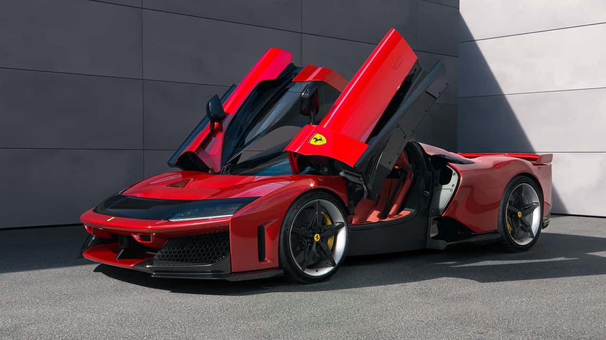
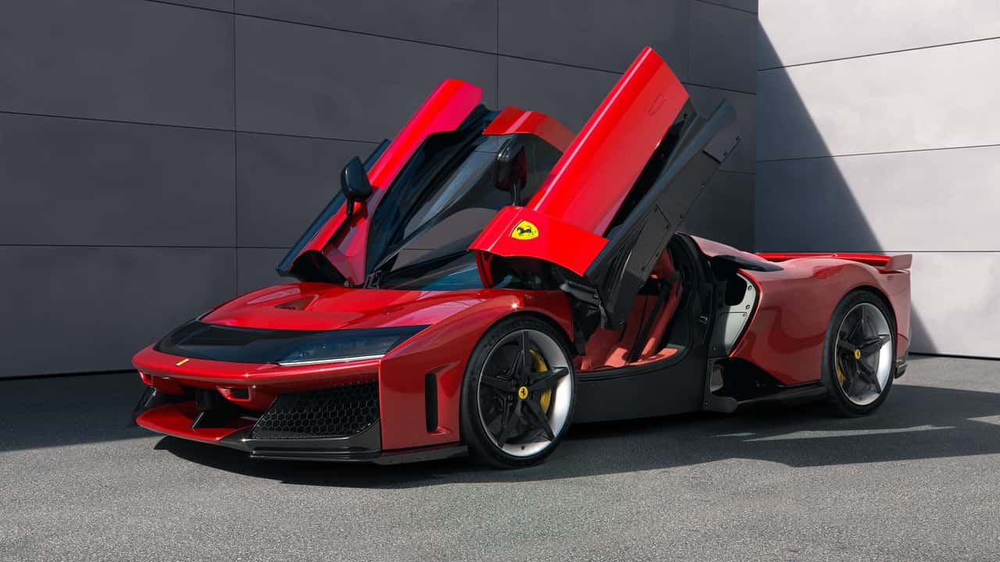

About Ferrari
History
Ferrari is an Italian luxury sports car manufacturer based in Maranello, Italy. Founded by Enzo Ferrari in 1939, the company built its first car in 1940. Ferrari is known for its participation in Formula One racing, where it has achieved great success. The brand is synonymous with speed, luxury, and exclusivity. Ferrari cars are often seen as a symbol of wealth and status. The company's prancing horse logo is one of the most recognizable in the world. Ferrari has produced many iconic models over the years, including the 250 GTO, the F40, and the LaFerrari. The company continues to innovate with new models and technologies. Ferrari's commitment to performance and design remains unwavering. The brand's legacy is built on a foundation of passion and excellence.
Models
Ferrari offers a range of models that cater to different tastes and preferences. The Ferrari 488 GTB is a mid-engine sports car that delivers exceptional performance. The Ferrari Portofino is a stylish convertible that combines elegance with power. The Ferrari 812 Superfast is one of the fastest and most powerful Ferraris ever made. The Ferrari SF90 Stradale is a hybrid supercar that represents the future of the brand. Each model is crafted with meticulous attention to detail and features cutting-edge technology. Ferrari's lineup also includes limited edition models that are highly sought after by collectors. The brand's commitment to innovation is evident in every car it produces. Ferrari continues to push the boundaries of automotive engineering. The company's cars are celebrated for their performance, design, and exclusivity. Ferrari remains a leader in the world of luxury sports cars.
- Ferrari Official Website
- Ferrari Models
- Ferrari History
- Ferrari News
Visit Ferrari Learn More About Ferrari